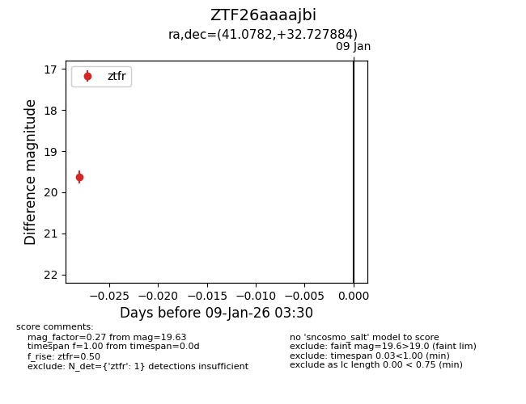
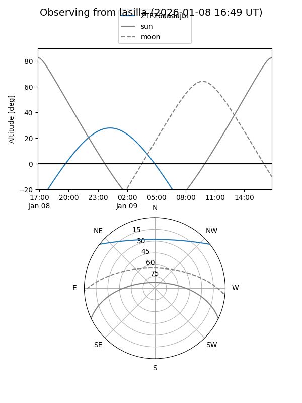
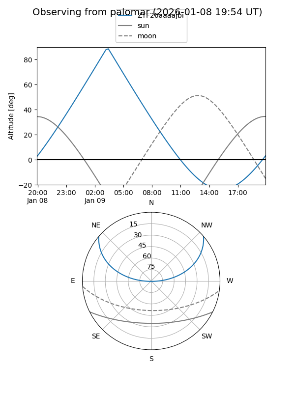

ZTF26aaaajbi
Target ZTF26aaaajbi at 2026-01-09 03:30
Aliases and brokers:
FINK:
Lasair:
ALeRCE:
alt names
ZTF26aaaajbi (ztf,fink_ztf)
Coordinates:
equatorial (ra, dec) = 41.0782,+32.72788
equatorial (HMS+DMS) = 02:44:18.77,+32:43:40.38
galactic (l, b) = (148.8322,-24.40532)
Flags:
Photometry:
last ztfr=19.63
1 ztfr detections
Lightcurve

Visibility


Additional plots